Project overview
Authorship
Nibal Sharrouf performed this case study in March 2026 as the capstone project for the Google Data Analytics Professional Certificate. The analysis used Python to explore bike‑share trips from January 2019 to December 2019. The final report and visualizations are hosted using GitHub Pages.
Case study brief
2.1 - Scenario
You are a junior data analyst working on the marketing analyst team at Cyclistic, a bike‑share company in Chicago. The director of marketing believes the company's future success depends on maximizing the number of annual memberships. Therefore, your team wants to understand how casual riders and annual members use Cyclistic bikes differently.
2.2 - About the company
In 2016, Cyclistic launched a successful bike‑share offering. Since then, the program has grown to a fleet of 5,824 bicycles that are geotracked and locked into a network of 692 stations across Chicago. The bikes can be unlocked from one station and returned to any other station in the system anytime.
Customers who purchase single-ride or full-day passes are referred to as casual riders. Customers who purchase annual memberships are Cyclistic members. Cyclistic's finance analysts have concluded that annual members are much more profitable than casual riders. Moreno has set a clear goal: Design marketing strategies aimed at converting casual riders into annual members.
1. Ask
Business objective
This analysis examines how casual riders and annual members use Cyclistic bikes differently, with the objective of identifying actionable strategies to convert casual riders into annual members.
Key behavioral insights (preview)
Casual riders are more likely than annual members to ride during evenings, on weekends, and in warmer months. They also show a preference for electric bikes and tend to take longer trips.
Recommended actions
- Creating targeted transactional emails that highlight the cost savings of becoming an annual member.
- Launching a digital campaign to showcase events and activities accessible via Cyclistic bikes.
- Expanding marketing efforts through digital channels to raise awareness of convenient cycling paths.
2. Prepare
Cyclistic's historical trip data is publicly available and is used to explore how different types of customers use Cyclistic bikes. The dataset is provided by Motivate International Inc. and stored in a secure internal database, making it reliable according to the ROCCC principles. The data covers January 2019 to December 2019, with 3,818,004 rows across 4 quarters. After cleaning and removing invalid trips (negative durations, duplicates), the final dataset contains 2,709,828 rows. It includes anonymous trip information such as start/end time, station names, ride duration, and rider type (casual or member).
3. Process
1. Importing Python libraries
Importing the essential Python libraries for data analysis: pandas, numpy, and os.
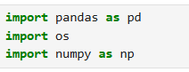
2. Loading the quarterly data
Loading the four quarterly CSV files from the CyclisDataQ1-Q4 folder.
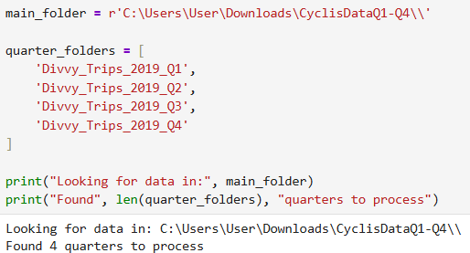
3. Storing data in a list
Storing each quarter's data in a list before combining them together.
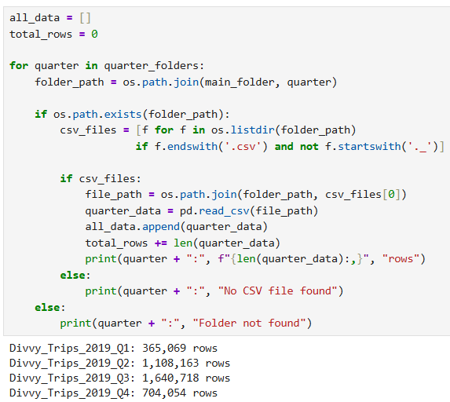
4. Combining all quarters
Combining all four quarters into one master dataframe called all_trips.
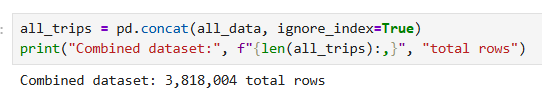
5. Viewing column names
Viewing all column names from the original 2019 dataset before renaming.
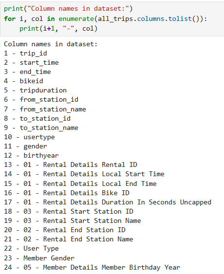
6. Standardizing column names
Standardizing column names to make them consistent and easier to work with.
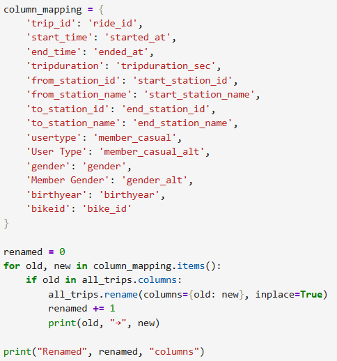
7. Converting to datetime
Converting start_time and end_time columns to proper datetime format.
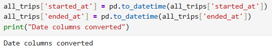
8. Creating new columns
Creating new columns: ride_length in minutes, day_of_week, month, and hour.
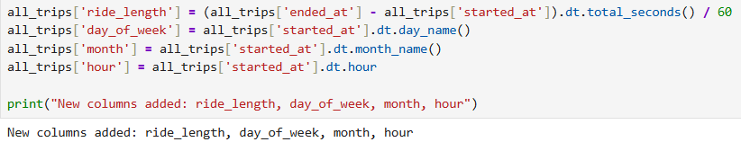
9. Standardizing user type
Standardizing the user type column to 'member_casual' for consistency.
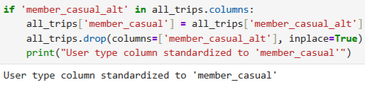
10. Cleaning the data
Removing invalid rows including negative ride lengths and duplicate entries.
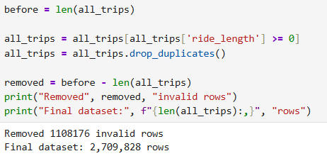
Cleaning Results:
Initial rows: 3,818,004 Invalid removed: 1,108,176 Final clean dataset: 2,709,828 rows
11. Final dataset summary
Final dataset summary showing 2.7 million clean trips ready for analysis.
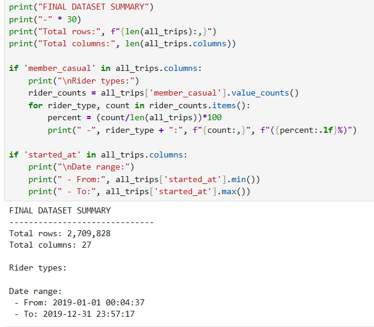
12. Ride length statistics
Statistical summary of ride lengths showing mean, median, and range for all trips.
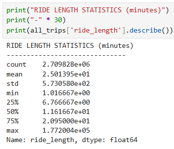
Ride duration statistics (minutes):
5. Act
Recommendations based on 2019 insights:
- Weekend marketing campaign targeting casual riders highlighting membership savings (since 60% of casual rides are on weekends).
- Introduce "weekend-only" or off-peak annual pass for casual users who primarily ride on weekends.
- App feature comparing trip costs vs. membership - show casual riders how much they could save with an annual membership.
- Targeted emails to casual riders who take frequent long weekend trips during summer months.